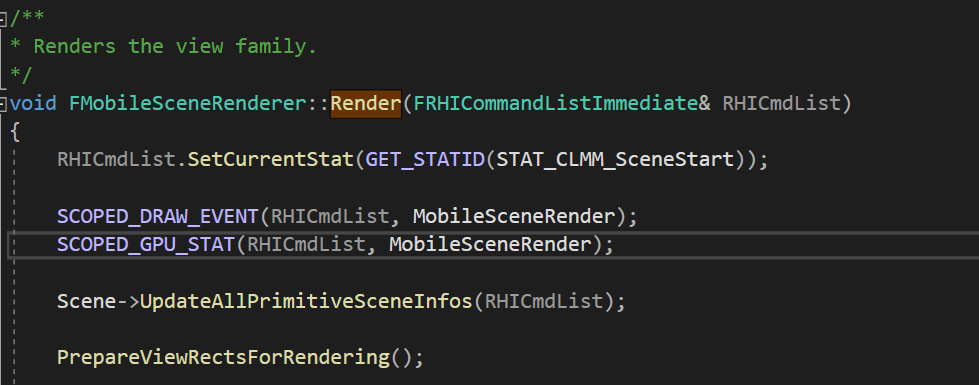

UE4移动端级联阴影ShadowMap使用率过低问题修复
2020/10/17
qiutang
在微软家的这篇 Common Techniques to Improve Shadow Depth Maps 文章中，详细讨论Shadow Map的各种问题和解决方案，里面的摩尔纹、Peter Pan、抗锯齿等常规问题都有着详细的解决方案。在简述Shadow Camera Setup的时候，他们简单提了下Shadow Camera Fit To Scene和Fit To View的两种做法，而这两种做法区别，对ShadowMap的利用率影响非常的大。
UE4内部的阴影解决方案很多，不过移动端能用上的就只有CSM。为了兼顾移动端的性能表现，设置CSM的数目 = 1就够用了，这时候的CSM实际上和单纯的ShadowMap算法没啥太大区别了，除了ShaodwMap利用率极低，阴影经常出现锯齿的这些问题。
国庆放假回来后就开始着手解决这些问题，修改这部分的源码，一共花了大概四天时间来看引擎的CSM部分的源码，看完就大概知道问题出在哪里了，然后15、16号游缘项目组准备搬家，这两天也是无心工作。16号下午美术部这边就剩下我一个人了，临近下班的时候正好引擎编译通过了，在RenderDoc里面测试了一切正常，现在Shadow Map利用率非常的高。
首先追踪Mobile Render的入口函数，它在MobileShadingRender.cpp中：

在准备好视口，RT池等一些缓存后，会开始调用FMobileSceneRenderer::InitViews来初始化每个视口。
进入该函数，注意力放在初始化阴影部分，发现在里面调用了FMobileSceneRenderer::InitDynamicShadows函数。
首先是命令台的指令解析。接下来对场景中的每一盏可移动直射光都做一次CSM Caster的收集，实际上这个收集是直接拿的FVisibleLightViewInfo里面的FMobileCSMSubjectPrimitives，拿到这个后，调用一次父类的FSceneRenderer::InitDynamicShadows。
在FSceneRenderer::InitDynamicShadows函数中，最重要的一次调用：AddViewDependentWholeSceneShadowsForView。在该函数中，利用FLightSceneInfo代理的Proxy来获取一个Initializer。
这里是直射光，直接来到DirectionalLightComponent的Proxy中。

从注释就可以看出来了，这是一种Fit To View的相机Setup方式。配合后面的逻辑，不难发现，UE4级联阴影的Setup步骤如下：
- 根据编辑器中的CSM设置计算CSM每一级的范围距离等信息。GetShadowSplitBounds
- 计算当前级联的视锥体包围球。GetShadowSplitBoundsDepthRange
- 根据当前包围球范围剔除包围球外的投影体。
- 根据包围球设置阴影相机的投影矩阵。
在上面四个步骤中，有意思的地方是步骤二的包围球计算。他们先计算了视锥的八个顶点，然后根据这八个顶点计算一个包围球。算法如下：

问题根源找到了，他们使用了Fit To View的算法，并且阴影相机的投影Setup永远是和相机视锥对齐的，虽然编辑器里面开放了DynamicShadowDistanceMovableLight参数，但是设置过小会导致阴影远距离Cull Off。
于是在他们Fit To View的基础上，我添加了一个视锥包围球的剔除测试，然后再对视锥包围球内部的Caster做一次Combine操作，得到的包围球作为最终的 Cascade Bounds。
这个可以很好的解决Shadow Map 利用率不高的问题。不过它也有缺点，当Caster本身的Bounds就非常大的时候，一顿操作下来，最终Combine的包围球比原先Fit To View的还要大，ShadowMap利用率反而降低了。
但这个问题可以通过判断最终Bounds半径大小来动态抉择最终的输出包围球来解决。
另外，当场景中投影体Bounds小，但是距离离得比较远时，原始的Combine操作导致Bounds增长速度非常的快，而远处的Caster实际上并不重要，加入一个根据相机视点距离和Caster Bounds大小作为权重的有偏Combine可以有效解决这个问题。
最后，对于选角、角色展示等场景，Caster很少时，我直接根据整个场景的Caster bounds来构建投影矩阵，连视锥构建都省了，快捷方便。XD。